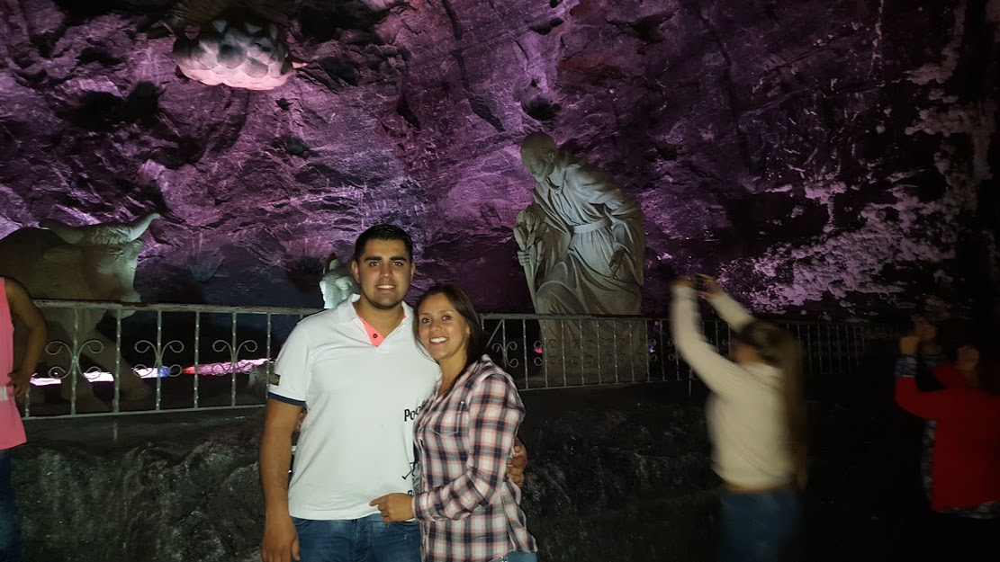
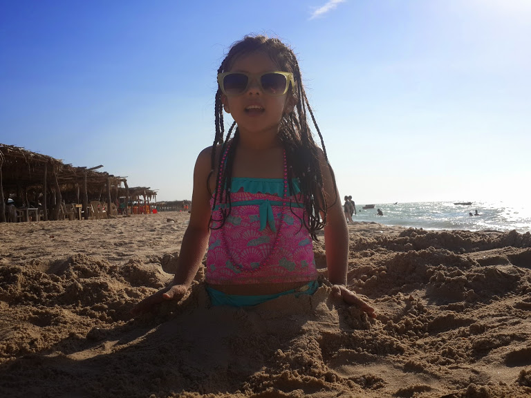
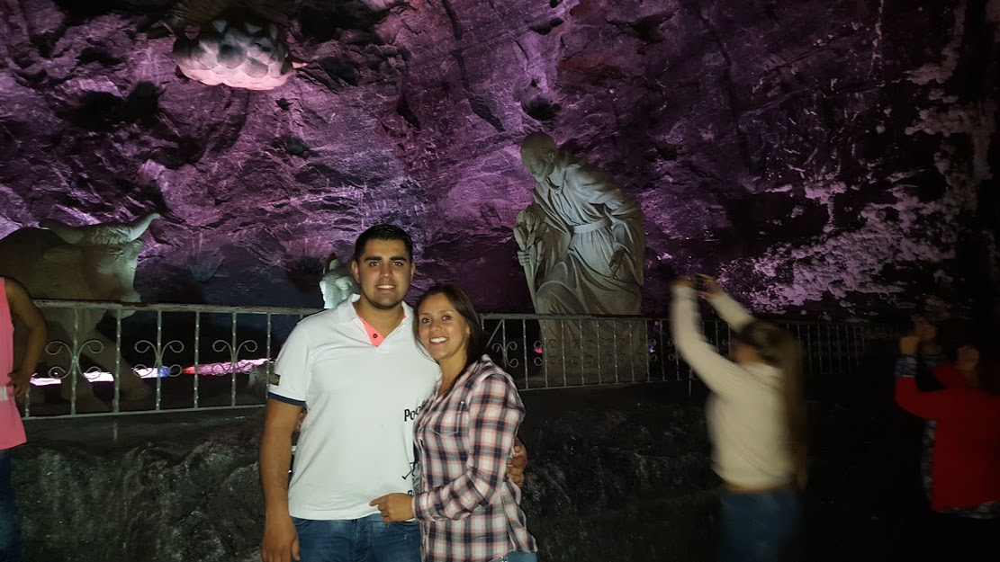
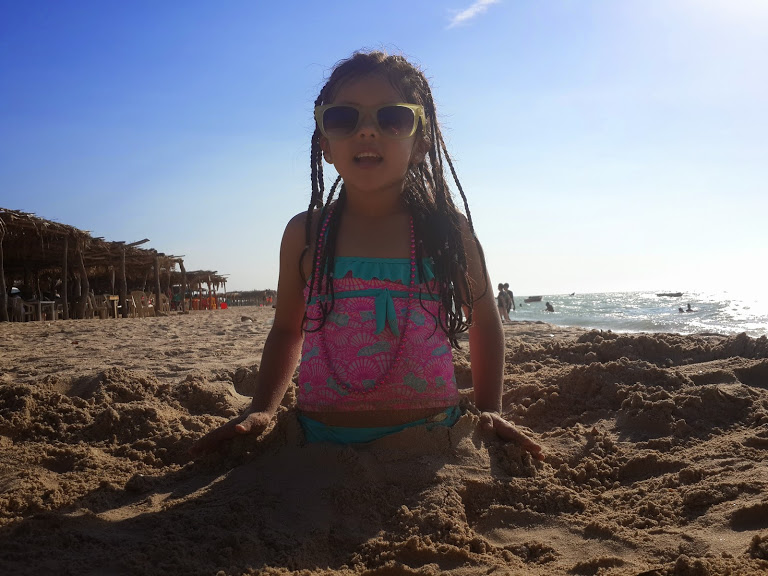

Viaje a Baru
29 de Diciembre de 2016
placeHotel Decameron, Baru
Esta isla de siete mil hectáreas es un pedazo de paraíso en el que abundan playas de fina arena y cristalinas aguas.También, un lugar visto hoy por empresarios como uno de los enclaves más importantes para el desarrollo turístico del país. Con una mano Mariela Zúñiga Barrios sostiene el tenedor con el cual voltea una y otra vez el pargo negro que frita, en u improvisado fogón levantado en el patio trasero de la que en Barú llaman la Casa Azul. Con la otra, trata de evitar que la brisa se lleve a lo lejos un estropeado sombrero de paja con el que busca hacerle el quite al implacable sol que baja esta mañana de un cielo sin nubes. El aroma a pescado no es ajeno a quienes a escasos metros, justo al lado de un taller de pareos, hacen fila con pimpinas alrededor de un pozo “que llora” para recoger agua de manera gratis a través de una manguera. Son mujeres, algunas con niños cargados en sus brazos, que buscan hacerle el quite a los $700 que deben pagar si quieren comprar agua potable en el único aljibe del pueblo. “¿Sí se da cuenta? Es que Barú no es el paraíso que la gente se imagina”, dice Mariela sin descuidar la fritura. Una frase que dista del imaginario de aquellos que visualizan a esta isla de siete mil hectáreas como un pedazo de cielo, en el cual creen tan solo abundan playas de fina arena y cristalinas aguas. Pero Barú es mucho más...
Está ubicada a 45 minutos en lancha desde Cartagena, en una de las áreas con mayor diversidad en su fauna en el mundo: El Parque Nacional Natural Corales del Rosario y San Bernardo. El primero está conformado por 43 islas, cubiertas de coral y en ellas se pueden apreciar cerca de 170 especies de peces. Este parque cubre alrededor de 20 hectáreas y se encuentra ubicado a 40 kilómetros de Cartagena. Está lo obvio y lo que todos visitan. Ejemplo de ello es playa Blanca, uno de los sitios más apetecidos de esta zona insular, en donde el visitante es recibido con un coco loco bien frío que precede a un coctel de camarones o a unas ostras frescas con zumo de limón. Todo, como antesala a un suculento pargo frito, patacones y arroz con coco o a un sancocho de pescado. Pero hay otras opciones. Al otro lado de la isla, yates privados llegan hasta escenarios como la ciénaga de Cholón, en donde son atendidos por nativos que literalmente caminan por entre el mar hasta sus embarcaciones para ofrecerles desde platillos caribeños hasta mariscos, cerveza y whisky.
Minas de SAL de Zipaquira
6 de Diciembre de 2015
placeZipaquira, Cundinamarca
La Catedral de Sal es un recinto construido en el interior de las minas de sal de Zipaquirá, en el departamento de Cundinamarca, Colombia. El diseño arquitectónico y artístico de la nueva Catedral de Sal, es propio del arquitecto bogotano Roswell Garavito Pearl, el cual salió aprobado tras la elección del proyecto que contenía un total de 44 propuestas en un concurso convocado por la Sociedad Colombiana de Arquitectos en 1990; mientras que la dirección técnica de ingeniería fue ejecutada por el ingeniero bogotano Jorge Enrique Castelblanco Reyes. En su interior se encuentra una rica colección artística, especialmente de esculturas de sal y mármol en un ambiente lleno de un profundo sentido religioso que atrae a turistas.1 La catedral de Sal de Zipaquirá es considerada como uno de los logros arquitectónicos y artísticos más notables de la arquitectura colombiana,2 por lo que se le ha otorgado incluso el título de joya arquitectónica de la modernidad.3 La importancia de la Catedral, radica en su valor como patrimonio cultural, religioso y ambiental.4 En 2007 mediante un concurso para elegir las 7 Maravillas de Colombia; la Catedral de Sal obtuvo la mayor votación; convirtiéndola en la Maravilla No.1 de Colombia, aunque también fue propuesta entre las Nuevas siete maravillas del mundo moderno. La iglesia subterránea hace parte del complejo cultural "Parque de la Sal",5 espacio cultural temático dedicado a la minería, la geología y los recursos naturales.
Kevin Ramirez
Mantenimiento preventivo correctivo Computadores, Experiencia en Service Desk en plataforma multinacional, pro activo y dinámico, gran capacidad de adaptación a aplicaciones inhouse, conocimientos Básicos en Linux, Instalación y configuración de sistemas Operativos Windows (Xp, Vista,7,8...), configuración e instalación de aplicaciones, configuración e instalación de redes y direcciones IP, montaje masivos de equipos, conocimientos de Microsoft Office y herramientas de diseño, seguridad de archivos, y de equipos (Antivirus) Diagnostico de daños de hardware.
EXCELENTE desempeño bajo presión e integración con equipo de trabajo, y presentación personal, cumplimiento de horarios, metas del equipo y atención al cliente final.